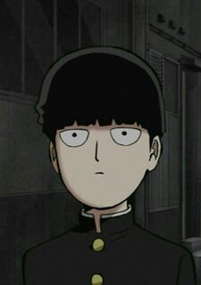

Донская Мария Андреевна I wanna describe myself in here, but I don't have enough time for it right now. So I should just write smth to get this area filled with smth. I'm gonna write a couple of sentences or just words and copy them. Let it be smth like I'm 18 years old and I'm laid-back, good-loking, funny girl. I'm 18 years old and I'm laid-back, good-loking, funny girl. I'm 18 years old and I'm laid-back, good-loking, funny girl. I'm 18 years old and I'm laid-back, good-loking, funny girl. I'm 18 years old and I'm laid-back, good-loking, funny girl. I'm 18 years old and I'm laid-back, good-loking, funny girl. I'm 18 years old and I'm laid-back, good-loking, funny girl. I'm 18 years old and I'm laid-back, good-loking, funny girl. I'm 18 years old and I'm laid-back, good-loking, funny girl. I'm 18 years old and I'm laid-back, good-loking, funny girl. I'm 18 years old and I'm laid-back, good-loking, funny girl. I'm 18 years old and I'm laid-back, good-loking, funny girl. I'm 18 years old and I'm laid-back, good-loking, funny girl. I'm 18 years old and I'm laid-back, good-loking, funny girl. I'm 18 years old and I'm laid-back, good-loking, funny girl. I'm 18 years old and I'm laid-back, good-loking, funny girl. Here I'm gonna tell you about my hobbies. I've got a dog and I really like playing with it. Her name is Tassy, she's 5 years old. She's a pluffy, cute and kind dog. By the way, now I can't spend time with her, because she's at home far away from Vladivostok. I miss her. In the summer I will definitely see her when I am back home. I've spent a half of year being without my dog. Sometimes I think deeply how she is and ask my family some questions about her health and so on. I like programming. Before I entered the University of Vladivostok named FEFU I haven't been programming so much and because of it, I've been worried a little bit. But now I feel just good. Talking about other hobbies.. Well, I train sports and it's enjoyable. I would definitely recommend you to do such stuff for your health and mood. Be in the pink of health! My hobbies:
|